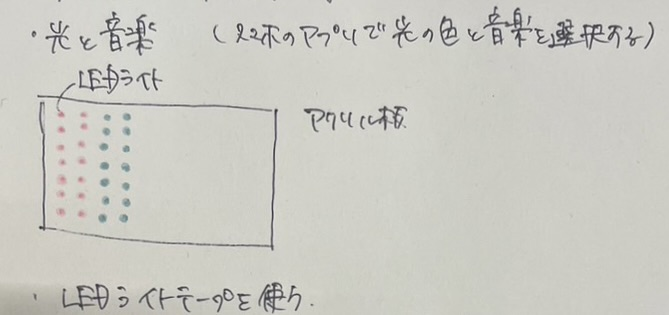

~アイデアスケッチ~

~概要~
プラプラネタリウムというと、実際に見に行くのはもちろん、近年では家の中でも楽しむことができる。
しかし、家で楽しもうとしても十分な空間が必要になってしまう。
そのため、狭いところでもどこでも楽しめるプラネタリウムを作ろうと思う。
~プロセスノート~
■は考えないといけないこと、疑問等
●は具体的にやること
→はやったこと
■ゴーグルの型はどうするか
●段ボールを使ってレーザーカットでかたどる
■レンズの部分は何を使うか
●百均で売っている魚眼レンズを使う（購入しないといけない）
■どうやっていろんな色の星を演出するか
●授業で使ったテープ型のカラーLEDライトを細かく切り取って、プログラミングをしてアクリル板に写すなどして使えそう
■どうやって星を動かしたり音楽を流すか
●アプリをプログラミングして音楽を流したり星を動かす